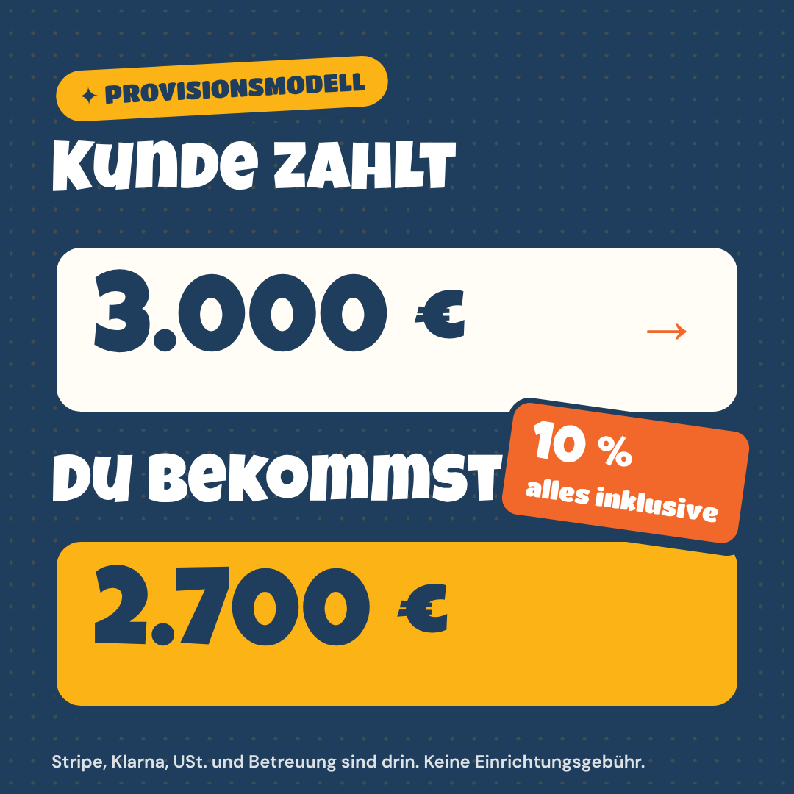
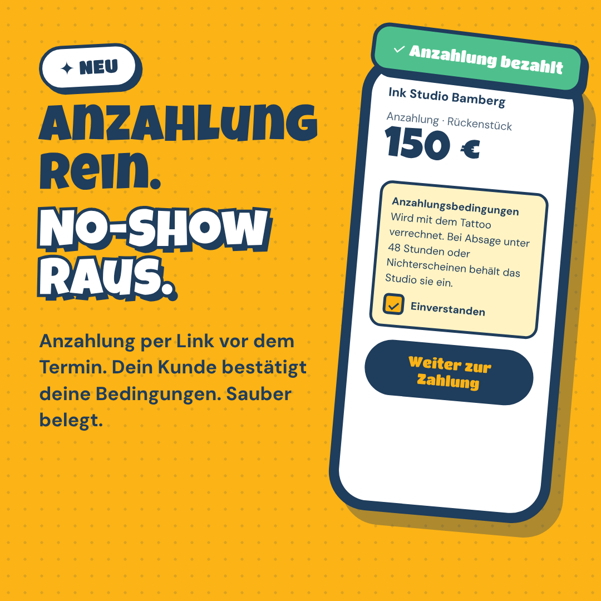
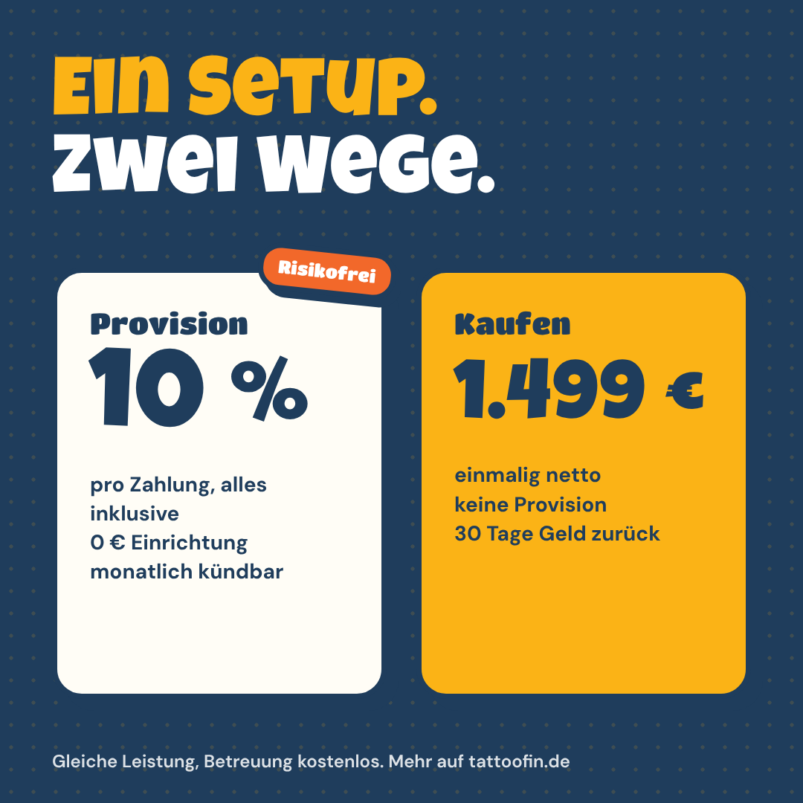
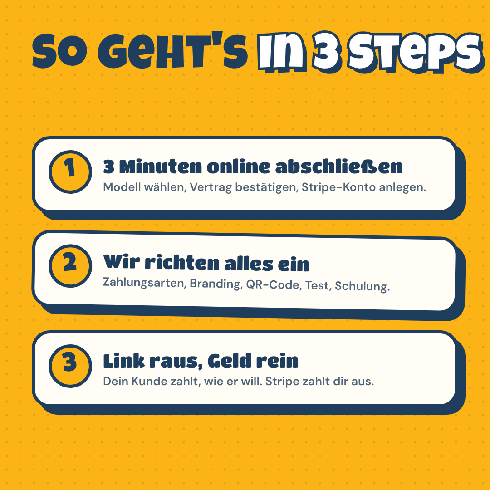
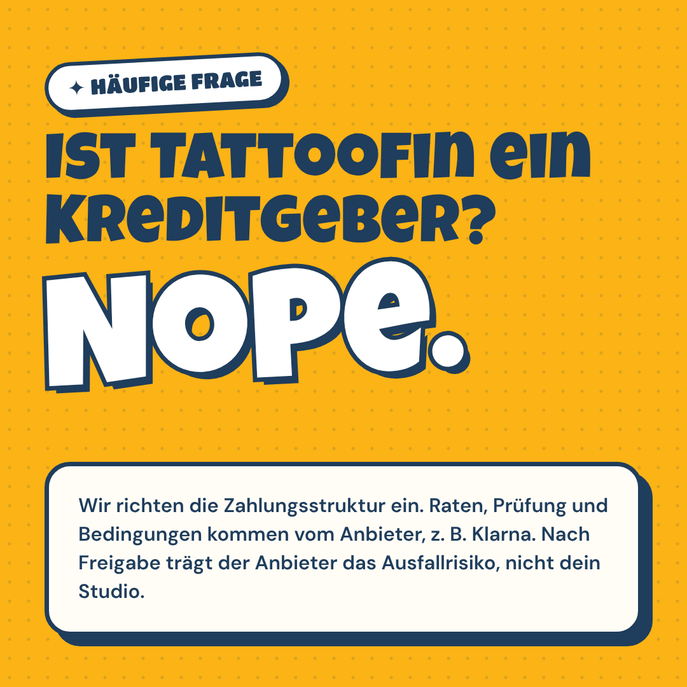
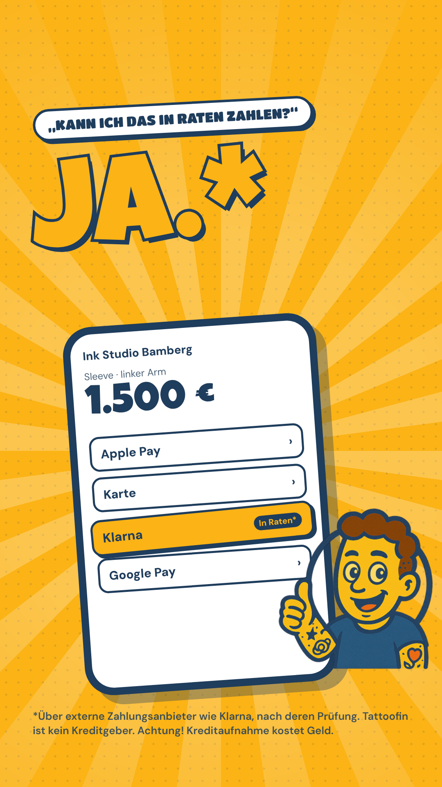
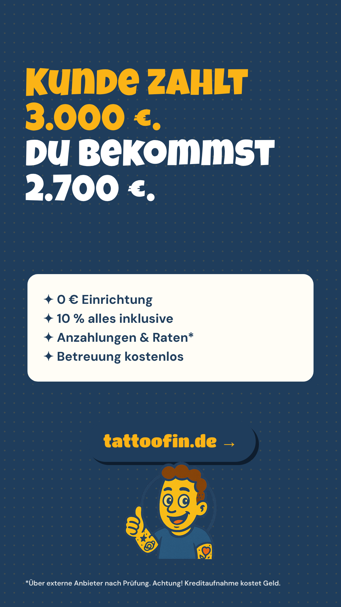

Facebook-Seite „Tattoofin“: komplett einrichten
Alle Bilder, alle Texte zum Kopieren, Messenger, erste Beiträge, Werbung. Dauer: ca. 15–20 Minuten.
Stand 10/2026
Kurz gesagt
- Zielgruppe der Seite sind Tattoo-Studios (Inhaber, Artists, Studiomanager), nicht Endkunden.
- Alle Grafiken liegen fertig in
social/facebook/export/. Texte unten einfach kopieren. - Wichtig vor dem Veröffentlichen: Impressum auf tattoofin.de mit echten Firmendaten füllen. Facebook-Seiten von Firmen brauchen in Deutschland einen Impressums-Link.
- Bei jedem Beitrag, der „Raten“ erwähnt: Fußnote mit „Achtung! Kreditaufnahme kostet Geld.“ (steht schon in Grafiken und Texten).
Seite lässt sich nicht erstellen? Diese Wege probieren (in dieser Reihenfolge)
- Direkt aus der Instagram-App: Profil @tattoofin.de → „Profil bearbeiten“ → „Seite“ (bzw. „Facebook-Seite verbinden“) → „Neue Facebook-Seite erstellen“. Damit ist Instagram gleich verknüpft.
- Über die Kontenübersicht: Instagram → Einstellungen → Kontenübersicht → „Konten hinzufügen“ → Facebook. Danach in der Meta Business Suite (business.facebook.com) → Einstellungen → Unternehmensportfolio → Seiten → „Hinzufügen“ → „Neue Facebook-Seite erstellen“.
- Kontostatus prüfen: facebook.com/settings → „Kontostatus“. Ist das private Profil neu, nicht per Handynummer bestätigt oder eingeschränkt, blockiert Meta das Anlegen von Seiten. Handynummer bestätigen und Zwei-Faktor-Authentifizierung einschalten.
- Technik ausschließen: Werbeblocker und VPN aus, anderer Browser oder direkt die Facebook-App am Handy.
- Name variieren: Statt „Tattoofin“ zum Beispiel „Tattoofin – Zahlungen fürs Tattoo-Studio“. Umbenennen geht später.
- Notlösung: Eine Person mit älterem, bestätigtem Facebook-Profil legt die Seite an und gibt dir danach vollen Zugriff (Seiteneinstellungen → Seitenzugriff).
1. Seite anlegen
- Mit deinem privaten Facebook-Profil einloggen (die Seite ist davon getrennt, dein Profil wird nicht öffentlich angezeigt).
- facebook.com/pages/create öffnen.
- Felder ausfüllen:
| Name der Seite | Tattoofin |
| Kategorie | 1. Unternehmensdienstleistung (Business Service), 2. Software. Bitte nicht „Finanzdienstleister“ oder „Kreditgeber“ wählen, Tattoofin vergibt keine Kredite. |
| Bio (max. 101 Zeichen) | Zahlungslinks, QR-Zahlseite, Anzahlungen & Raten über Klarna* für Tattoo-Studios. 0 € Einrichtung. |
- Profilbild hochladen:
export/profilbild.png(wird rund angezeigt, das Maskottchen sitzt mittig). - Titelbild hochladen:
export/titelbild.png(1640 × 624). Auf dem Handy werden links und rechts ein paar Zentimeter abgeschnitten, der Text sitzt im sicheren Bereich.
2. Infos, Kontakt, Impressum
Seite → Info bearbeiten bzw. Einstellungen → Seiteninfos:
| Benutzername | @tattoofin (falls vergeben: @tattoofinde). Instagram läuft unter @tattoofin.de. |
| Website | https://tattoofin.de |
| Telefon / WhatsApp | (WhatsApp-Nummer verknüpfen: Einstellungen → Verknüpfte Konten → WhatsApp) |
| Ort / Adresse | Nur Stadt anzeigen, keine Laufkundschaft. Adresse |
| Öffnungszeiten | Mo–Fr 9–17 Uhr (gleich wie Betreuungszeiten im Vertrag) |
| Impressum | https://tattoofin.de/impressum.html (Feld „Impressum“ unter Seiteninfos; zusätzlich den Link in die ausführliche Beschreibung) |
| Datenschutz | https://tattoofin.de/datenschutz.html |
Ausführliche Beschreibung („Info“ / „Mehr über dich“):
3. Button und Benutzername
| Aktions-Button | „Registrieren“ (oder „Mehr dazu“) → https://tattoofin.de/start.html?utm_source=facebook&utm_medium=page |
| Zweiter Weg | „WhatsApp senden“ als Alternative, wenn du lieber Gespräche statt Direktabschlüsse willst. |
4. Messenger automatisch beantworten
Meta Business Suite → Posteingang → Automatisierungen:
Sofortige Antwort (erste Nachricht):
Häufig gestellte Fragen (max. 4, erscheinen als Buttons):
| Was kostet Tattoofin? | Zwei Wege: Provision mit 0 € Einrichtung und 10 % pro Zahlung, alles inklusive (Kunde zahlt 3.000 €, du bekommst 2.700 €). Oder einmal kaufen für 1.499 € netto ohne Provision. Details: https://tattoofin.de/#preise |
| Wie funktioniert das? | Du erstellst im Portal einen Zahlungslink (Projekt oder Anzahlung) und schickst ihn per WhatsApp. Dein Kunde wählt beim Bezahlen Karte, Apple Pay, Google Pay oder Klarna. Stripe zahlt dir automatisch aus. Wir richten alles ein und schulen dein Team. |
| Kann ich Anzahlungen nehmen? | Ja. Art „Anzahlung“ wählen oder über deine QR-Zahlseite. Dein Kunde bestätigt vorher deine Anzahlungsbedingungen, z. B. Verfall bei No-Show. Das ist gespeichert und dein Beleg. |
| Seid ihr ein Kreditgeber? | Nein. Tattoofin richtet die Zahlungsstruktur ein. Raten, Prüfung und Bedingungen kommen vom Zahlungsanbieter, z. B. Klarna. Nach Freigabe trägt der Anbieter das Ausfallrisiko. Achtung! Kreditaufnahme kostet Geld. |
Abwesenheitsnachricht (außerhalb Mo–Fr 9–17 Uhr):
5. Instagram verknüpfen
- Instagram-Konto @tattoofin.de als Business-Konto anlegen, gleiches Profilbild und gleiche Bio.
- Facebook-Seite → Einstellungen → Verknüpfte Konten → Instagram verbinden. Danach Beiträge in der Meta Business Suite einmal planen, auf beiden Kanälen ausspielen.
- Für das Instagram-Raster die Posts in umgekehrter Reihenfolge hochladen (Post 09 zuerst, Post 01 zuletzt), dann ergeben die 9 Grafiken ein sauberes 3 × 3-Raster.
6. Die ersten 9 Beiträge (Start-Paket)
Empfehlung: In der ersten Woche 3 Beiträge, danach 2–3 pro Woche. Post 01 oben anpinnen.





| Grafik | Text zum Beitrag |
|---|---|
| 01 · Raten? Ja. (anpinnen) | „Kann ich das auch in Raten zahlen?“ 🤔 Kennt jedes Studio. Ab jetzt ist die Antwort: Ja.*
Mit Tattoofin bietet dein Studio Zahlungslinks, eine QR-Zahlseite, Anzahlungen und Ratenzahlung über Klarna an. Wir richten alles ein, du tätowierst.
👉 https://tattoofin.de
*Über externe Zahlungsanbieter wie Klarna, nach deren Prüfung. Tattoofin ist kein Kreditgeber. Achtung! Kreditaufnahme kostet Geld.
#tattoostudio #tattooartist #tattoodeutschland #tätowierer #tattooshop |
| 02 · 3.000 → 2.700 | Kunde zahlt 3.000 €. Du bekommst 2.700 €. Fertig. 💸
Im Provisionsmodell sind Stripe, Klarna, Umsatzsteuer und unsere Betreuung schon in den 10 % drin. Keine Einrichtungsgebühr, keine Grundgebühr, monatlich kündbar. Keine Zahlung über Tattoofin = keine Kosten.
Alle Details: https://tattoofin.de/#preise
#tattoobusiness #tattoostudio #tattooartist |
| 03 · Anzahlung | No-Shows nerven. 😤 Mit Tattoofin schickst du die Anzahlung als Link oder lässt sie an der Theke per QR zahlen. Dein Kunde bestätigt vor dem Bezahlen deine Anzahlungsbedingungen, gespeichert mit Zeitpunkt.
Kein PayPal-Freunde-Gebastel mehr. Karte, Apple Pay, Google Pay oder Klarna. Auszahlung automatisch.
👉 https://tattoofin.de
#tattoostudio #noshow #tattooappointment #tattooartist |
| 04 · Link raus | Betrag eintippen. Per WhatsApp schicken. Geld da. ✅
So einfach ist ein Zahlungslink mit Tattoofin. Du siehst im Portal sofort, wenn bezahlt wurde, und bekommst eine E-Mail. Dein Kunde wählt selbst, wie er zahlt.
👉 https://tattoofin.de
#tattooshop #tattooartist #whatsappbusiness |
| 05 · Zwei Wege | Ein Setup, zwei Wege es zu bezahlen:
🟡 Provision: 0 € Einrichtung, 10 % pro Zahlung, alles inklusive. Risikofrei.
🔵 Kaufen: 1.499 € netto einmalig, keine Provision, 30 Tage Geld-zurück-Garantie.
Gleiche Leistung, Betreuung immer kostenlos. Welcher Weg passt zu dir? Unser Rechner sagt's dir: https://tattoofin.de/#rechner
#tattoobusiness #tattoostudio |
| 06 · So geht's | In 3 Schritten startklar:
1️⃣ Online abschließen (3 Minuten), Stripe-Konto anlegen (10 Minuten)
2️⃣ Wir richten Zahlungsarten, Branding und QR-Code ein, testen und schulen dein Team
3️⃣ Link raus, Geld rein
Kein Technik-Kram für dich. 👉 https://tattoofin.de/start.html
#tattoostudio #tattooartist |
| 07 · Studio Kit | Dein Studio Kit kommt mit: Fensteraufkleber, Flyer, Thekenaufsteller und Instagram-Vorlagen, alle mit deinem QR-Code zur Zahlseite. Damit jeder schon vor der Tür sieht: Hier geht's flexibel.*
*Über externe Anbieter nach deren Prüfung. Achtung! Kreditaufnahme kostet Geld.
#tattoostudio #tattooshop #studiolife |
| 08 · Kreditgeber? Nope. | Häufigste Frage: „Seid ihr ein Kreditgeber?“ Nope. 🙅
Wir richten deinem Studio die Zahlungsstruktur ein. Raten, Prüfung und Bedingungen kommen vom Zahlungsanbieter, z. B. Klarna. Nach Freigabe bekommt dein Studio den Betrag ausgezahlt, das Ausfallrisiko liegt beim Anbieter.
Fragen? Schreib uns einfach hier oder per WhatsApp.
Achtung! Kreditaufnahme kostet Geld. |
| 09 · Jetzt starten | Mach den Preis nicht zur ersten Hürde. 🖤
Abschluss in 3 Minuten, komplett online. Mit Vertrag, AVV und sicherer Zahlung über Stripe.
👉 https://tattoofin.de
#tattoostudio #tattooartist #tattoodeutschland |
Stories: story-01-raten.png und story-02-start.png mit Link-Sticker auf https://tattoofin.de/start.html?utm_source=instagram. Danach als Highlight „Tattoofin“ speichern.


7. Redaktionsplan erste 4 Wochen
| Woche | Mo | Mi | Fr |
|---|---|---|---|
| 1 | Post 01 (anpinnen) | Post 02 | Post 03 + Story 01 |
| 2 | Post 04 | Reel: „Zahlungslink in 10 Sekunden“ (Bildschirmaufnahme Portal → WhatsApp) | Post 05 |
| 3 | Post 06 | Reel: Studio zeigt Fensteraufkleber und QR an der Theke | Post 07 + Story 02 |
| 4 | Post 08 | Reel: Werbevideo (vorhandenes Video, 15–30 Sek. Schnitt) | Post 09 |
Sobald die ersten Studios live sind: Kurz-Statements mit Studio-Logo („Seit Tattoofin verschieben weniger Kunden ihr Projekt“) nur mit schriftlicher Zustimmung des Studios posten.
8. Werbung (Meta Ads), wenn die Seite steht
| Ziel | Traffic bzw. Leads auf https://tattoofin.de/start.html?utm_source=meta&utm_medium=paid |
| Zielgruppe | Deutschland, 22–55 Jahre. Interessen: Tätowierung, Tattoo-Studio, Tattoo-Künstler, Kleinunternehmen. Berufsbezeichnungen: Tätowierer, Tattoo Artist, Studioinhaber. Ausschließen: Interessen „Tattoo-Ideen“ (Endkunden). |
| Platzierungen | Facebook- und Instagram-Feed, Stories, Reels |
| Budget-Test | 10 € pro Tag, 14 Tage. Zwei Anzeigen gegeneinander: Post 03 (Anzahlung) und Post 02 (3.000 → 2.700). Gewinner danach hochfahren. |
| Achtung Sonderkategorie | Anzeigen, die Ratenzahlung oder Kredite bewerben, verlangt Meta in der Regel als Sonderkategorie „Finanzprodukte und -dienstleistungen“ zu kennzeichnen. Dann sind Alters- und Detail-Targeting eingeschränkt. Tipp: Anzeigen ohne „Raten“-Botschaft (Anzahlung, Zahlungslink, 3.000 → 2.700) fallen meist nicht darunter. Im Werbeanzeigenmanager bei „Sonderkategorie“ prüfen. |
9. Checkliste
- Impressum auf tattoofin.de mit echten Daten gefüllt (Adresse, Register, USt-IdNr., E-Mail)
- Seite angelegt, Kategorie, Bio, Profil- und Titelbild
- Website, WhatsApp, E-Mail, Öffnungszeiten, Impressum- und Datenschutz-Link
- Button „Registrieren“ mit UTM-Link
- Messenger: sofortige Antwort, 4 FAQ, Abwesenheitsnachricht
- Instagram verknüpft
- Post 01 veröffentlicht und angepinnt, Post 02–09 in der Business Suite geplant
- Link zur Facebook-Seite an uns schicken, dann verlinken wir sie im Website-Footer